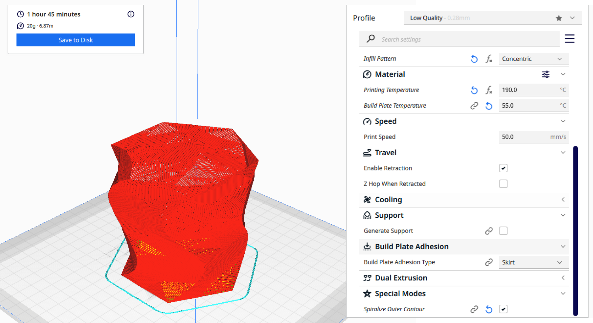

A8: Final Project!
Dec. 6, 2022For the final project, I designed a planter and plant stand.
Breakdown of Tasks / Techniques Used
- Incorporating / designing around stock part
- 3D Modeling in Rhino
- Laser cutting the plant stand
- Press fit plant stand
- 3D printing planter
- Grasshopper for parametric planter design (stretch goal)
Designing the Plant Stand
I researched styles of the plant stand that I wanted to design. I took a lot of inspiration from Etsy. Upon browsing Etsy, I found this plant stand.
Here are the measurements of the parts and a rendered version of what it should look like once I laser cut and assemble.

Laser Cutting
I exported the Rhino file as an .ai file and imported it into Adobe Illustrator. My birch hardwood was 24" x 24" which barely fit into the laser cutter machine. (Shoutout to the Lowe's employee for cutting my hardwood in half!). Since I only had 3 pieces to cut out, it was pretty easy to arrange them on the laser cutting layout in Illustrator.

I had to adjust the size of the circle a couple of times to make it fit into the plant stand. Once I was able to get the right size, it was a snug fit!
On the laser cutter, I used the following settings:
- Speed: 5
- Power: 100
- PPI: 300

Designing the Planter
3D Printing
I imported the .stl file into Cura to 3D print. I decided to print in low quality since I am impatient. I used the Spiralize Outer Contour mode; I learned that this is alternatively called "Vase Mode". The printing process was fairly quick: ~2 hours.
After a couple of hours of printing, it was ready! Here's what it looked like fresh out of the printer.

Assembly
I didn't like the light plywood, so I bought a walnut color wood stain off Amazon to paint over.
I transferred the plant from its nursery pot to the pot that I created.
Here's a picture of the final product sitting with other plants that I have collected!
Bill of Materials
Birch Hardwood: $11
Wood stain: $13
Paint brush: $2
Filament: $20
-------------
Total: $46
Acknowledgement
Thank you to the Lowes worker for cutting the plywood down so it could fit in the laser cutting machine.
The couple of undergrads who were working on their airplane project at the 8... they helped me troubleshoot why the machine wouldn't start cutting :'^)
The Discord Q&A and MILL status channels!
Resources
Etsy plant stand inspoYoutube video for planter inspo (Rhino)
Source Files
Planter - Rhino (.3dm)Planter - Cura (.stl)
---
Plant Stand - Rhino (.3dm)
Planter - Adobe Illustrator (.ai)
Return to Main